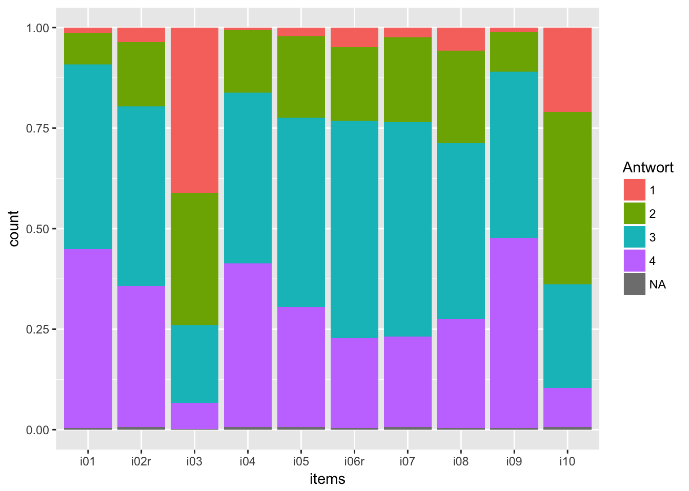
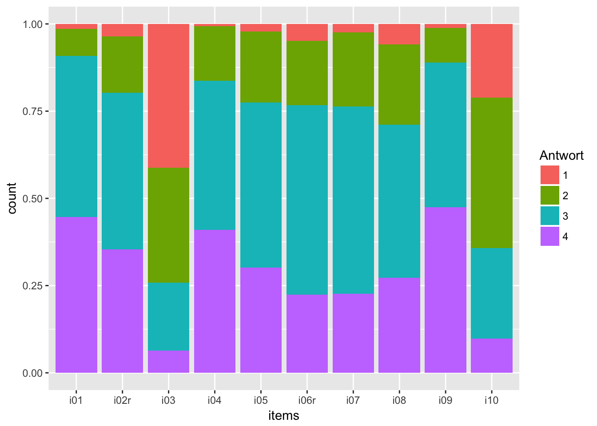
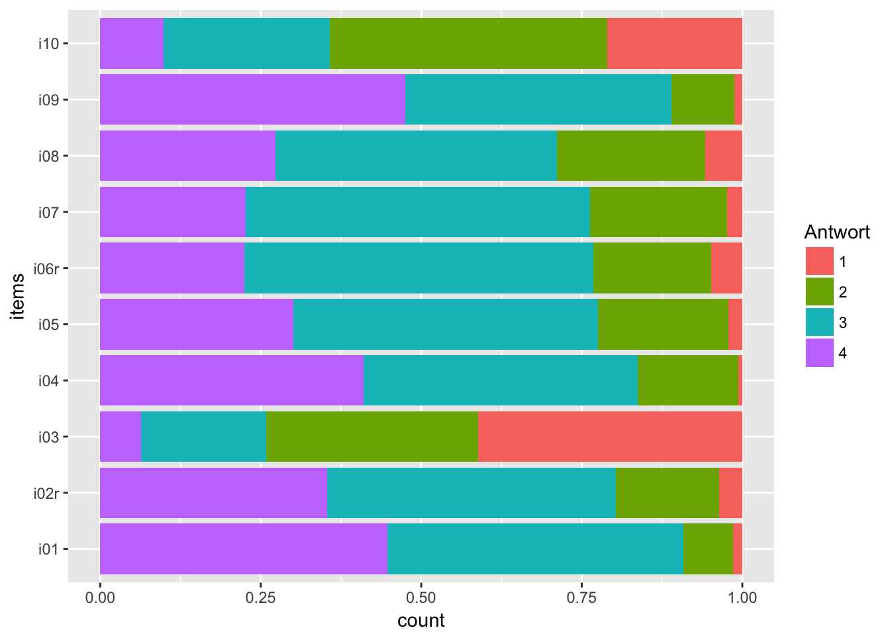
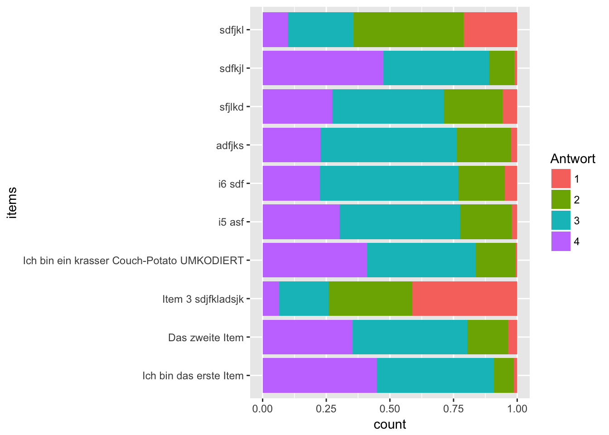
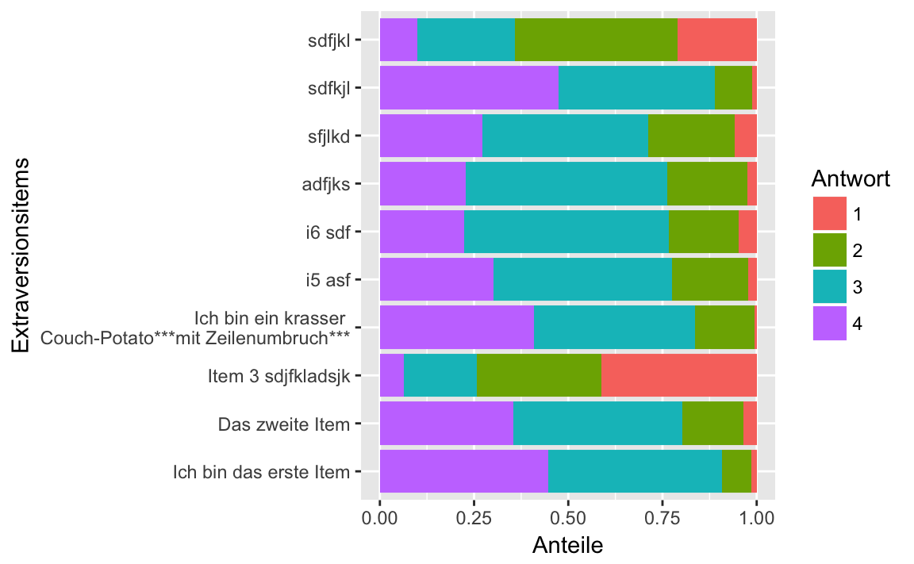
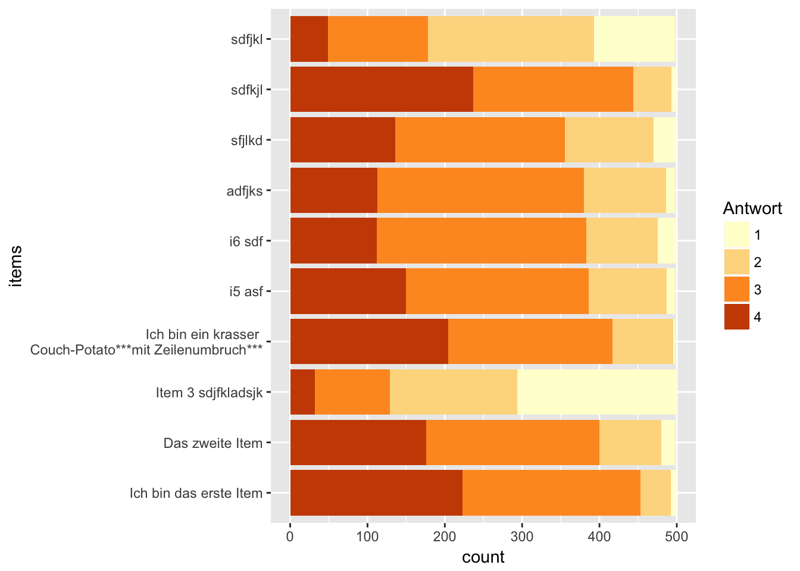

Kapitel 9 Fallstudie zur Visualisierung
Benötigte Pakete:
library(tidyverse)## Loading tidyverse: ggplot2
## Loading tidyverse: tibble
## Loading tidyverse: tidyr
## Loading tidyverse: readr
## Loading tidyverse: purrr
## Loading tidyverse: dplyr## Conflicts with tidy packages ----------------------------------------------## filter(): dplyr, stats
## lag(): dplyr, statslibrary(corrr)
library(GGally)##
## Attaching package: 'GGally'## The following object is masked from 'package:dplyr':
##
## nasaEine recht häufige Art von Daten in der Wirtschaft kommen von Umfragen in der Belegschaft. Diese Daten gilt es dann aufzubereiten und graphisch wiederzugeben.
9.1 Daten einlesen
Hier laden wir einen Datensatz zu einer Online-Umfrage:
data <- read.csv("https://osf.io/meyhp/?action=download")Der DOI für diesen Datensatz ist 10.17605/OSF.IO/4KGZH.
Der Datensatz besteht aus 10 Extraversions-Items (B5T nach Satow1) sowie einigen Verhaltenskorrelaten (zumindest angenommenen). Uns interessieren also hier nur die 10 Extraversions-Items, die zusammen Extraversion als Persönlichkeitseigenschaft messen (sollen). Wir werden die Antworte der Befragten darstelle, aber uns hier keine Gedanken über Messqualität u.a. machen.
Die Umfrage kann hier2 eingesehen werden. Schauen wir uns die Daten mal an:
glimpse(data)## Observations: 501
## Variables: 28
## $ X <int> 1, 2, 3, 4, 5, 6, 7, 8, 9, 10, 11, 12, 13, ...
## $ timestamp <fctr> 11.03.2015 19:17:48, 11.03.2015 19:18:05, ...
## $ code <fctr> HSC, ERB, ADP, KHB, PTG, ABL, ber, hph, IH...
## $ i01 <int> 3, 2, 3, 3, 4, 3, 4, 3, 4, 4, 3, 3, 4, 4, 3...
## $ i02r <int> 3, 2, 4, 3, 3, 2, 4, 3, 4, 4, 3, 4, 3, 3, 3...
## $ i03 <int> 3, 1, 1, 2, 1, 1, 1, 2, 1, 2, 1, 1, 1, 4, 1...
## $ i04 <int> 3, 2, 4, 4, 4, 4, 3, 3, 4, 4, 3, 3, 2, 4, 3...
## $ i05 <int> 4, 3, 4, 3, 4, 2, 3, 2, 3, 3, 3, 2, 3, 3, 3...
## $ i06r <int> 4, 2, 1, 3, 3, 3, 3, 2, 4, 3, 3, 3, 3, 3, 3...
## $ i07 <int> 3, 2, 3, 3, 4, 4, 2, 3, 3, 3, 2, 4, 2, 3, 3...
## $ i08 <int> 2, 3, 2, 3, 2, 3, 3, 2, 3, 3, 3, 2, 3, 3, 4...
## $ i09 <int> 3, 3, 3, 3, 3, 3, 3, 4, 4, 3, 4, 2, 4, 4, 4...
## $ i10 <int> 1, 1, 1, 2, 4, 3, 2, 1, 2, 3, 1, 3, 2, 3, 2...
## $ n_facebook_friends <int> 250, 106, 215, 200, 100, 376, 180, 432, 200...
## $ n_hangover <int> 1, 0, 0, 15, 0, 1, 1, 2, 5, 0, 1, 2, 20, 2,...
## $ age <int> 24, 35, 25, 39, 29, 33, 24, 28, 29, 38, 25,...
## $ sex <fctr> Frau, Frau, Frau, Frau, Frau, Mann, Frau, ...
## $ extra_single_item <int> 4, 3, 4, 3, 4, 4, 3, 3, 4, 4, 4, 4, 4, 4, 4...
## $ time_conversation <dbl> 10, 15, 15, 5, 5, 20, 2, 15, 10, 10, 1, 5, ...
## $ presentation <fctr> nein, nein, nein, nein, nein, ja, ja, ja, ...
## $ n_party <int> 20, 5, 3, 25, 4, 4, 3, 6, 12, 5, 10, 5, 10,...
## $ clients <fctr> , , , , , , , , , , , , , , , , , , , , , ...
## $ extra_vignette <fctr> , , , , , , , , , , , , , , , , , , , , , ...
## $ extra_description <int> NA, NA, NA, NA, NA, NA, NA, NA, NA, NA, NA,...
## $ prop_na_per_row <dbl> 0.04347826, 0.04347826, 0.04347826, 0.04347...
## $ extra_mean <dbl> 2.9, 2.1, 2.6, 2.9, 3.2, 2.8, 2.8, 2.5, 3.2...
## $ extra_median <dbl> 3.0, 2.0, 3.0, 3.0, 3.5, 3.0, 3.0, 2.5, 3.5...
## $ client_freq <int> NA, NA, NA, NA, NA, NA, NA, NA, NA, NA, NA,...9.2 Daten umstellen
Wir haben ein Diagramm vor Augen (s.u.), bei dem auf der X-Achse die Items stehen (1,2,…,n) und auf der Y-Achse die Anzahl der Kreuze nach Kategorien.
Viele Grafik-Funktionen sind nun so aufgebaut, dass auf der X-Achsen nur eine Variable steht. ggplot2, das wir hier verwenden, ist da keine Ausnahme. Wir müssen also die “breite” Tabelle (10 Spalten, pro Item eine) in eine “lange Spalte” umbauen: Eine Spalte heißt dann “Itemnummer” und die zweite “Wert des Items” oder so ähnlich.
Also, los geht’s: Zuerst wählen wir aus der Fülle der Daten, die Spalten, die uns interessieren: Die 10 Extraversions-Items, in diesem Fall.
data_items <- select(data, i01:i10)Dann stellen wir die Daten von “breit” nach “lang” um, so dass die Items eine Variable bilden und damit für ggplot2 gut zu verarbeiten sind.
data_long <- gather(data_items, key = items, value = Antwort)
data_long$Antwort <- factor(data_long$Antwort)Den Befehl mit factor brauchen wir für zum Diagramm erstellen im Folgenden. Dieser Befehl macht aus den Zahlen bei der Variable Antwort eine nominale Variable (in R: factor) mit Text-Werten “1”, “2” und so weiter. Wozu brauchen wir das? Der Digrammbefehl unten kann nur mit nominalen Variablen Gruppierungen durchführen. Wir werden in dem Diagramm die Anzahl der Antworten darstellen - die Anzahl der Antworten nach Antwort-Gruppe (Gruppe mit Antwort “1” etc.).
Keine Sorge, wenn sich das reichlich ungewöhnlich anhört. Sie müssen es an dieser Stelle nicht erfinden :-)
Man gewöhnt sich daran einerseits; und andererseits ist es vielleicht auch so, dass diese Funktionen nicht perfekt sind, oder nicht aus unserer Sicht oder nur aus Sicht des Menschen, der die Funktion geschrieben hat. Jedenfalls brauchen wir hier eine factor Variable zur Gruppierung…
Damit haben wir es schon! Jetzt wird gemalt.
9.3 Diagramme für Anteile
Wir nutzen ggplot2, wie gesagt, und davon die Funktion qplot (q wie quick, nehme ich an.).
ggplot(data = data_long) +
aes(x = items) +
geom_bar(aes(fill = Antwort), position = "fill") 
Was macht dieser ggplot Befehl? Schauen wir es uns in Einzelnen an:
ggplot(data = ...): Wir sagen “Ich möchte gern die Funktion ggplot nutzen, um den Datensatz … zu plotten”.aes(...): Hier definieren wir die “aesthetics” des Diagramms, d.h. alles “Sichtbare”. Wir ordnen in diesem Fall der X-Achse die Variableitemszu. Per Standardeinstellung gehtggplotdavon aus, dass sie die Häufigkeiten der X-Werte auf der Y-Achse haben wollen, wenn Sie nichts über die Y-Achse sagen. Jetzt haben wir ein Koordinatensystem definiert (das noch leer ist).geom_bar(): “Hey R oder ggplot, jetzt male mal einen barplot in den ansonsten noch leeren plot”.aes(fill = Antwort): Genauer gesagt nutzen wiraesum einen sichtbaren Aspekte des Diagramms (wie die X-Achse) eine Variable des Datensatzes zuzuordnen. Jetzt sagen wir, dass die Füllung (im Balkendiagramm) durch die Werte vonAntwortdefiniert sein sollen (also “1”, “2” etc.).position = "fill"sagt, dass die Gesamt-Höhe des Balken aufgeteilt werden soll mit den “Teil-Höhen” der Gruppen (Antwort-Kategorien 1 bis 4); wir hätten die Teil-Höhen auch nebeneinander stellen können.
Vielleicht ist es schöner, die NAs erst zu entfernen.
data_long <- na.omit(data_long)Und dann noch mal plotten:
ggplot(data = data_long) +
aes(x = items) +
geom_bar(aes(fill = Antwort), position = "fill") 
9.4 Um 90° drehen
Dazu nehmen wir + coord_flip(), also “flippe das Koordinatensystem”.
ggplot(data = data_long) +
aes(x = items) +
geom_bar(aes(fill = Antwort), position = "fill") +
coord_flip()
9.5 Text-Labels für die Items
Wir definieren die Texte (“Labels”) für die Items:
item_labels <- c("Ich bin das erste Item",
"Das zweite Item",
"Item 3 sdjfkladsjk",
"Ich bin ein krasser Couch-Potato UMKODIERT",
"i5 asf", "i6 sdf", "adfjks", "sfjlkd", "sdfkjl", "sdfjkl")Jetzt hängen wir die Labels an die Items im Diagramm:
ggplot(data = data_long) +
aes(x = items) +
geom_bar(aes(fill = Antwort), position = "fill") +
coord_flip() +
scale_x_discrete(labels = item_labels)
Man kann auch einen Zeilenumbruch in den Item-Labels erzwingen… wobei das führt uns schon recht weit, aber gut, zum Abschluss :-)
item_labels <- c("Ich bin das erste Item",
"Das zweite Item",
"Item 3 sdjfkladsjk",
"Ich bin ein krasser \nCouch-Potato***mit Zeilenumbruch***",
"i5 asf", "i6 sdf", "adfjks", "sfjlkd", "sdfkjl", "sdfjkl")Und wieder plotten:
ggplot(data = data_long) +
aes(x = items) +
geom_bar(aes(fill = Antwort), position = "fill") +
coord_flip() +
scale_x_discrete(labels = item_labels, name = "Extraversionsitems") +
scale_y_continuous(name = "Anteile")
9.6 Diagramm mit Häufigkeiten
Ach so, schön wäre noch die echten Zahlen an der Y-Achse, nicht Anteile. Dafür müssen wir unseren Diagrammtyp ändern, bzw. die Art der Anordnung ändern. Mit position = "fill" wird der Anteil (also mit einer Summe von 100%) dargestellt. Wir können auch einfach die Zahlen/Häufigkeiten anzeigen, in dem wir die Kategorien “aufeinander stapeln”
ggplot(data = data_long) +
aes(x = items) +
geom_bar(aes(fill = Antwort), position = "stack") +
coord_flip() +
scale_x_discrete(labels = item_labels) 
9.7 Farbschema
Ja, die Wünsche hören nicht auf… Also, noch ein anderes Farbschema:
ggplot(data = data_long) +
aes(x = items) +
geom_bar(aes(fill = Antwort), position = "stack") +
coord_flip() +
scale_x_discrete(labels = item_labels) +
scale_fill_brewer(palette = 17)